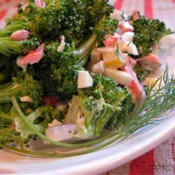

Description
No bacon, no fruit, no seeds: this broccoli salad, adapted from a recipe in a newspaper clipping from 1980, combines potato salad flavors--hard-cooked eggs, dill, celery seed, mayo--with crisp fresh broccoli.
Ingredients
- 3 eggs
- 1 pound broccoli, chopped
- ¼ cup finely chopped red onion
- 1 cup green olives, sliced
- 1 (4 ounce) jar diced pimentos, drained
- ¾ cup mayonnaise
- 1 teaspoon dry mustard powder
- ½ pinch salt, or to taste
- ½ teaspoon celery seed
- 1 tablespoon chopped fresh dill
Steps
- Place the eggs into a saucepan in a single layer and fill with water to cover the eggs by 1 inch. Cover the saucepan and bring the water to a boil over high heat. Once the water is boiling, remove from the heat and let the eggs stand in the hot water for 15 minutes. Pour out the hot water, then cool the eggs under cold running water in the sink. Peel and chop once cold.
- Meanwhile, bring a large pot of lightly salted water to a boil. Add the broccoli and cook uncovered until bright green and just tender, about 2 minutes. Drain in a colander, then immediately immerse in ice water for several minutes until cold to stop the cooking process. Once the broccoli is cold, drain well and set aside.
- Combine the red onion, hard-cooked eggs, green olives, pimentos, mayonnaise, mustard powder, salt, celery seed, and dill in a mixing bowl. Stir in the drained cooked broccoli. Refrigerate overnight for best flavor.
Return to top
Return to main page